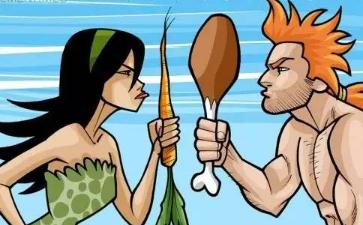

今天，膳食影响
要回答这个问题，我们要考虑两点——人体的构造及肉食带来的生理后果。
既然我们进食时是要用手和用口，就可以从身体这两个部位的构造去了解一下。人的牙齿，如吃草动物的牙齿一样，构造上是适宜用来磨碎和咀嚼植物性食物的，食肉动物有两排用来撕裂肉食的尖锐而细长的前齿，而人却没有。通常，吃肉的动物很少先咀嚼，它们会直接吞咽食物，因此它们不需要臼齿及两边移动的颚。还有，人的手没有尖利的爪，加上和其他手指相对的大姆指，人的一双手用来收割蔬菜、水果比用来杀猎动物适合很多。
就拿食肉动物、草食动物及人类生理上的比较来看，食肉动物：有爪、皮肤无毛孔、靠舌头排汗散热等；草食动物及人类：无爪、皮肤上布满毛孔，可以靠排出大量的汗液来进行必要的新陈代谢。
而消化系统来看，差异就更为明显了。
消化食物的程序由把食物放进口腔开始；除咀嚼的食物以外，可以看看人的唾液腺构造如何影响不同食物的消化程度。人的唾液腺极为发达，唾液是碱性的，淀粉酶含量很高，方便消化谷类和水果，反之，肉食动物口内唾液腺少，唾液为酸性，无淀粉酶来消化谷类。到了胃部的肉食需要强烈盐酸来消化，动物胃中便有强烈的盐酸消化坚韧的动物肌肉、骨头等。而人和草食动物的胃酸比肉食动物弱两倍。
肉食动物和人另一个重要的分别是大小肠。肉食动物的大小肠又短又直，皱折不多。肉是浓缩性食物，只不过是死尸的一部份，又容易腐败，为了使肉的消化残余物不会停留在大小肠太久，所以肉食动物的大小肠只是身体长度的三倍。然而，人的大小肠长度是身体长度的十二倍，肉食在大小肠的温度下，更易腐败和发酵，产生很多对身体器官有害的毒素。因此适合人的食物不是肉类。
肾脏病——
体内特别容易受到这些毒素破坏的器官是肾脏。肾脏是体内的过滤机器，把自血液制造而成的尿素及其他可溶废物的溶液排出体外。肉食产生的过剩毒素，使肾脏操作过劳。即使一个肉食份量适度的人，他肾脏的工作量较
心脏病——
人体无法处理过多的动物脂肪正好说明人不适宜吃肉。肉食动物能够摄取近乎无限量的胆固醇及脂肪，而没有不良作用。用狗来作的实验，在两年期间，每天在饲料里加进半磅奶油，完全没有影响它们血清的胆固醇浓度。
另一方面，草食动物及人类，处理任何超过身体所需的胆固醇浓度或饱和脂肪的能力有限。经过一段相当时间，沉淀的脂肪积聚在动脉内壁上，形成一种称为动脉硬化的情况，
远在一九一二年，美国医学协会杂志已声明，占美国死亡导因百分之五十以上的心脏病，其中的百分之九十至百分之九十七的心脏病，如果患者是吃素的话，便可以避免。这些声明受到美国心症协会的报告支持，报告指出“以标准模式来评定膳食与心脏冠状症的关系，具有充份资料的人口调查报告证据说明含高浓度饱和脂肪的饮食是导致心脏冠状症的主因。”
癌症——
人的肠道不适宜消化肉类，可以从直肠癌跟吃肉的相互关系得见。以肉为主，谷类和蔬菜为副的膳食，使排泄物在肠里停留的时间较长，毒素便有充份发挥作用的机会，长期下来便形成直肠癌。
食物中脂肪含量与纤维质的多少是致癌的另一个原因。专家的统计显示，食肉量多的国家如澳州、纽西兰及美国，直肠癌的罹息率很高；至于，东方如日本等国家的吃肉量相对很少，罹患率也很低。因此，食肉量多寡成正比例的导致直肠癌的出现。
不断的研究结果显示出吃肉是导致其他种类癌症的因素。另一种因肉类消耗量高而导致的癌症是乳癌。一九八三年，美国国家科学研究院提出建议：“大家减少食用肉类，多吃五谷、蔬果、水果，就可以防止一般的癌症发生。”
癌病研究又发现一种称为亚硝胺nitrosamines的化学致癌物。亚硝胺是在胃里消化过程中形成的。当肉类所含的化学防腐剂与另一种混和于啤酒、茶、咖啡、酒的胺接触时产生化学变化，亚硝胺使会形成，动物试验以亚硝胺来喂饲的动物，六个月以来，百分之一百接受试验的动物都患有致命的恶性瘤。美国田纳西州橡树岭的国立实验所的威廉·李金斯基博士说：“它们全身满布癌，脑、肺、胰、脏、胃、肝、肠、副肾全都有；总之，它们是血淋淋的一团。”
当然，与癌症发展有关的因素除了食物以外，还有环境及遗传因子等其他原因。加州大学生物学家兼国际科学学会研究小组主席果布斯坦博士在提出的研究报告上说：“我们并不认为有一种
肉类里危害性的化学药品——
肉类消费者通常并不在意他们放进肚子里的肉，里面有多少可能引发毒害的化学药品。格利及史蒂芬·纽尔在他们合著的《你身体内的毒素》一书揭示了企业经营的动物农场所运用各种层出不穷的手法。“动物不断被填进镇静齐、荷尔蒙、抗生素，以及其他二千七百种的药物。目的是要他们活下去，还要养得肥肥胖胖的。”他们写道：“甚至在他们还未出生之前，这个催肥的程序便开始，一直到他们死亡之后的一段相当日子，还继续下去。尽管在你吃肉的时候，这些药物仍然遗留在肉里，法律并没有规定包装上须要列明这些药物。”肉商施用这些药物可以减低他们的制肉成本，可是将来消费者要付出医药费，甚至要赔上生命的代价又是多少呢？
另一种肉商常用的催生剂是砷。一九七二年，美国农业部发现国家占百分之十五的家禽业用的砷量超过法律制定的限度。砷根本就是一种毒药。
用来减缓肉类如火腿、腌薰猪肉腐坏速度的防腐剂——硝酸钠和亚硝酸钠都是有害健康的。这些化学物接触肉类的血和肌肉里的色素，便产生一种化学反应，使肉类添上一层鲜红色泽。不用这些化学物的话，动物尸骸的肉原来霉旧的灰色会使人望而却步。
不幸的是，这些化学物不会区分死尸的血还是活人的血，很多中毒死亡的人，都是意外地吃进了含过多化学物的肉。这些化学物遗害至甚，就算是少量也足以致命，对小孩和婴孩尤其如此。
家畜工业场地环境拥挤、污秽，一定要施用大量的抗生素。过度使用抗生素自然带来一些对抗生素免疫的细菌，这些细菌会传染到吃肉者的身上。还有，动物受屠宰时，因愤怒、恐惧、挣扎，会产生大量荷尔蒙或化学物，特别是肾上腺素，混和在动物血液里的废物，如尿素、尿酸，留在肉内，人吃了会毒害身体。
肉里的病菌——
肉除了含有毒害性的化学物之外，还带有动物本身的疾病。待宰家禽被拥挤在污秽不洁的环境，受强迫喂饲和不人道的对待，患病的比野生的更多。肉类检查人员尝试挑出不合乎规格的肉，可是，由于肉食工业团体的压力及时间的不足，被检定的肉远较规格所定的标准为低的情形，是肉类消费者不能想像到的。
美国农业部一份一九七二年的报告，列出患有眼癌的牛有十万头，患有肝溃疡的竟达三百五十九万六千三百零二宗，肉商只将患病的部位割去，其余部份仍被检定及格，供人食用。检定报告指出动物尸骸为侵蚀性的粪便、蟑螂、锈菌污染。有些检验官藉口解释法律的松缓，说如果要严格按规例去执行，没有一家肉类包装公司可以经营下去。
肉的营养——
常常一谈到素食，自然的反应是：“缺少了蛋白质怎么办？”素食者可以这样回答：“象又怎么办？还有水牛、犀牛怎么办？”以为只有肉才可以提供蛋白质，和要有精力便需要大量蛋白质的
蛋白质虽然是人体不可缺少的营养素，但过量却会对身体有害。尤以含有尿酸的动物性蛋白质更为有害。多量蛋白质身体根本用不到，过量的蛋白质转化成含氮的废物，会增加肾脏负担，使肾脏的过滤工作受到损害。身体体能的主要来源是碳水化合物。过多的蛋白质，只会浪费精力。一个成人究竟每天需要多少蛋白质，根据《为生命而吃》一书；“成人每日所需的最少蛋白质量只要吃两片全麦面包和喝一品脱的
人体需要的营养素除了蛋白质以外，还有碳水化合物、脂肪、无机盐、维他命，肉类只可以供应蛋白质和脂肪（却含有不适宜人体摄取的高浓度胆固醇），至于其他的营养素近乎没有。所以问题反而是：“缺少了碳水化合物、无机盐、维他命又怎么办呢？”
健康素食的新一代——
素食的孩子会怎样？
美国罗省曾经做过一次儿童智力测验，智力最高的儿童都是来自素食
澳州
美藉华人蒲仲强是长跑能手。他在美国参加多次比赛，破了多次纪录。他父亲蒲大宏博士主张吃素，所以蒲仲强从小开始就吃素了。蒲博士曾说：“光吃肉的小孩是永远不会有力气的。”
为什么不给我们的孩子一个我们被剥夺了的权利呢？